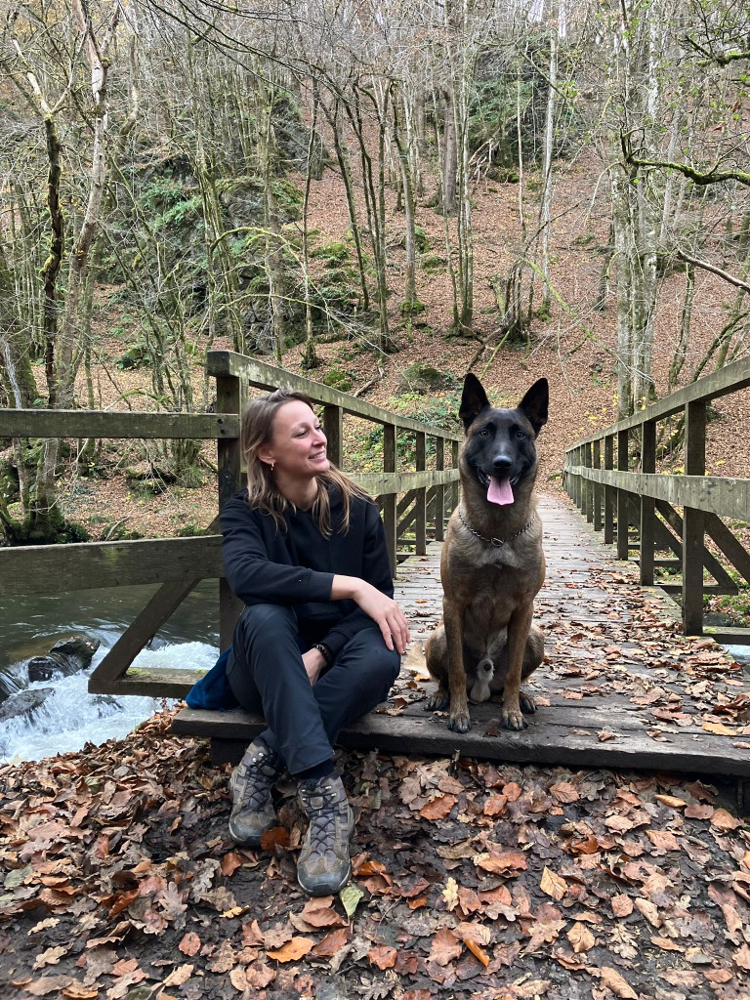

Wie is Jill?
Boortmeerbeek
Wil je Jill beter leren kennen en nagaan of ze voor jullie iets kan betekenen? Ontdek het verhaal achter Alfa Dogs.

Over Jill
Jill
Ik ben Jill, al bijna 20 jaar actief in de hondenwereld. In al die jaren heb ik samen met Harry*, Kenzo*, Falco*, Balto*, (Dino*), (Darky*), (Sam*), Bo* en Jax al wat watertjes doorzwommen. Ik heb natuurlijk mijn eigen honden getraind, zowel privé als professioneel. Sommige kwamen van bij een kweker, de meeste werden geadopteerd, sommige waren pup en andere al wat ouder.
Ik heb gebruik gemaakt van verschillende soorten trainingsmaterialen en -technieken. Ik heb les gekregen van enorm inspirerende mensen, maar ook van professionelen die hun diploma niet waardig zijn. Ik heb les gevolgd en gegeven in een 'klassieke hondenschool', alsook 1-op-1 begeleiding. Ik heb theoretische cursussen gevolgd en gegeven, boeken gelezen en het internet afgezocht.
Ik heb enorme vooruitgang geboekt, maar ik heb zeker nog een parcours te gaan van bijleren, vallen en opstaan. Ik heb onder andere ervaring in gehoorzaamheid, pakwerk en geurdetectie, zowel in theorie als praktijk. Mijn parcours is nog niet afgelopen… maar ik ben wel klaar voor een volgende stap: van mijn passie mijn bijberoep maken en zoveel mogelijk honden (met een rugzak) helpen door hun geleider een duwtje in de juiste richting te geven.
Die passie leidde tot Alfa Dogs — een plek waar hondeneigenaren begeleid worden naar bewuste keuzes en eerlijke resultaten. Met hoge dosis praktijkervaring, een open-minded aanpak en een groot back-up netwerk van inspirerende personen sta ik klaar om jullie te helpen, ook bij uitdagende gevallen.
Neem contact op